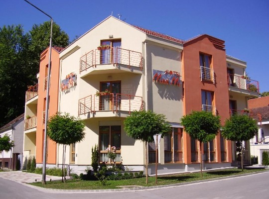

Smještaj

Hotel Mladimir
Hotel Maldimir u Daruvaru je luksuzni smještajni objekt koji pruža vrhunsku uslugu i udobnost svojim gostima. Smješten u prekrasnom krajoliku grada Daruvara, ovaj hotel nudi izuzetno iskustvo boravka za sve vrste putnika, bilo da dolaze u posjet ili žele opuštajući odmor. Hotel Maldimir se ponosi svojom modernom arhitekturom i elegantnim dizajnom interijera. Svaka soba je pažljivo uređena s naglaskom na udobnost i luksuz, pružajući gostima ugodan prostor za opuštanje nakon napornog dana. Sobe su prostrane, svijetle i dobro opremljene s najnovijom tehnologijom. Gosti mogu uživati u udobnom krevetu, besplatnom bežičnom pristupu internetu, minibaru, televizoru sa satelitskim programima i klima uređaju. Hotel Maldimir nudi i širok izbor sadržaja za opuštanje i rekreaciju. Gosti mogu uživati u vanjskom bazenu okruženom bujnim vrtom, koji je savršeno mjesto za rashlađivanje u vrućim ljetnim danima. Tu je i moderno opremljen fitness centar za one koji žele održavati svoju formu tijekom boravka. Spa centar nudi razne wellness tretmane i masaže kako bi gostima pružio potpuno opuštanje i obnovu.
Hotel Slavonija
Hotel Slavonija u Daruvaru je popularan smještajni objekt koji nudi udobnost, kvalitetnu uslugu i širok spektar sadržaja za svoje goste. Smješten u srcu grada Daruvara, ovaj hotel je idealan izbor za poslovne putnike, obitelji i turiste koji žele istražiti ljepote regije. Hotel Slavonija je poznat po svojoj gostoljubivosti i brizi o detaljima. Sobe su prostrane, moderno uređene i opremljene svim potrebnim sadržajima za ugodan boravak. Gosti mogu birati između različitih tipova soba, uključujući jednokrevetne, dvokrevetne i obiteljske sobe. Svaka soba ima udoban krevet, klima uređaj, televizor sa satelitskim programima, sef, besplatni bežični pristup internetu i vlastitu kupaonicu sa sušilom za kosu. Restoran hotela Slavonija nudi širok izbor domaćih i internacionalnih jela. Gosti mogu uživati u bogatom doručku, a la carte ručku i večeri ili odabrati neki od specijaliteta koji se pripremaju na roštilju. Restoran također ima prekrasnu terasu gdje gosti mogu uživati u obroku na otvorenom uz panoramski pogled na okolne zelene površine.